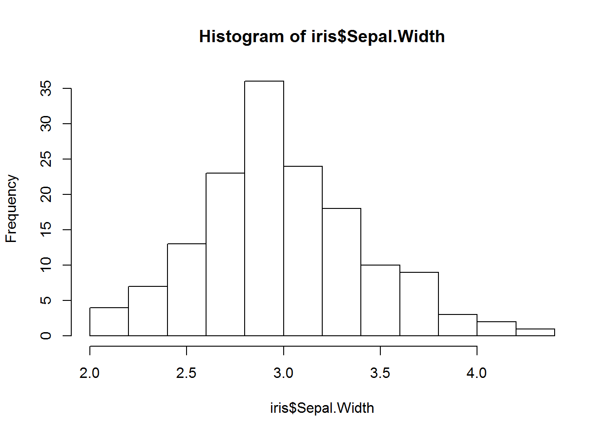
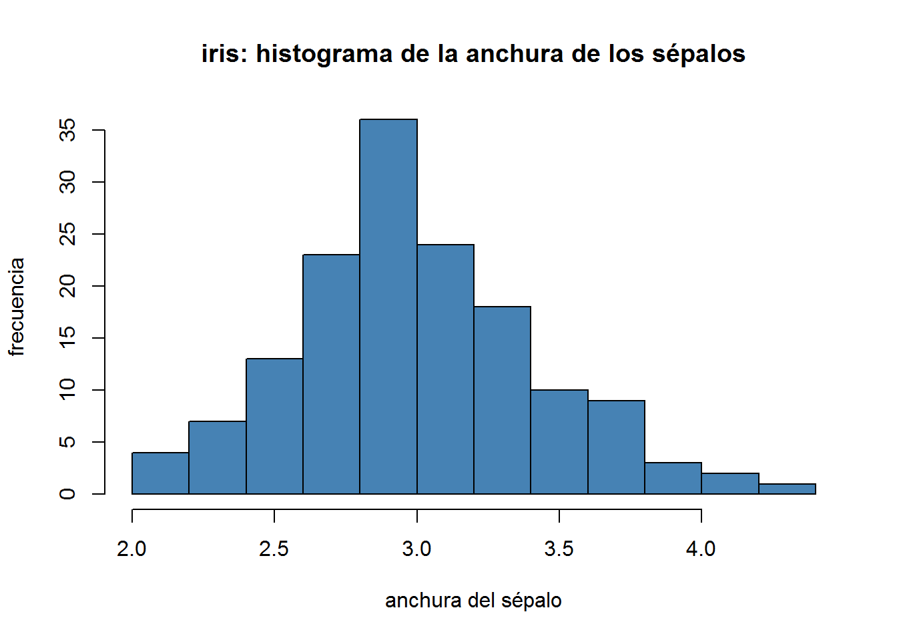

Capítulo 4 Tablas
Las tablas en R se conocen como Data Frames.
Muy frecuentemente, los datos se disponen en tablas: las hojas de cálculo, las bases de datos, los ficheros csv, etc. contienen, esencialmente, tablas. Además, casi todos los métodos estadísticos (p.e., la regresión lineal) operan sobre información organizada en tablas. Como consecuencia, gran parte del día a día del trabajo con R consiste en manipular tablas de datos para darles el formato necesario para acabar analizándolos estadística o gráficamente.
Las hojas de cálculo son herramientas que prácticamente todos hemos usado para manipular tablas de datos. Sin embargo R y R studio no permiten la flexibilidad de manejar tablas con el mouse. Asi que hay que aprender algunos comandos basicos para manipular e indexar.
4.1 Crear Data Frames
Para practicar y como ejemplo, usaremos una tabla que viene por defecto con R. Se trata de la tabla iris3. Esta tiene columnas que contienen cuatro características métricas de cada especie de flor: la longitud y la anchura de sus pétalos y sépalos; y la especie: setosa, versicolor o virgínica, a la que pertenecen. De momento y hasta que aprendamos cómo importar datos de fuentes externas, utilizaremos este y otros conjuntos de datos de ejemplo que incluye R.
Ya que es impráctico mostrar tablas enteras en la consola, sobre todo cuando son grandes. Para mostrar solo parte de ellas, hay algunas funciones útiles para inspeccionar tablas (y, como veremos más adelante, no solo tablas), esta son:
4.2 Indexar data frames
Las tablas se indexan usando el corchete [] y este debe ir separado por una coma [,] donde el primer valor representa las filas y el segundo las columnas, siempre en ese orden. Por ejemplo:
iris[1:5,] # muestra las 5 primeras filas
iris[,1:3] # muestra las 3 primeras columnas
iris[25,4] # muestra el dato de la fila 25 y columna 4
# los corchetes tambien admiten los nombres de las columnas
iris[, "Species"]
## Usando el $ en las tablas
# Pero se usa mas habitualmente (porque es más rápido y más legible) iris$Species en lugar de iris[, "Species"]
iris$Species El corchete también permite seleccionar filas mediante condiciones lógicas. Por ejemplo seleccionemos de la tabla de iris las que corresponden a la especie setosa:
4.2 Ejercicio:
Selecciona las filas de iris cuya longitud del pétalo sea mayor que 4.
4.3 Crear una columna nueva
Lo mas practico es usar el nombre de la tabla seguido de $ y el nombre de la nueva columna. Por ejemplo creemos la columna raiz cuadrada de la longitud del petalo
Tengan en cuenta que:
- agregar una columna que ya existe la reemplaza,
- agregar una columna que no existe la crea y
- asignar NULL a una columna existente la elimina.
4.4 visualizar la tabla graficamente
4.4.1 como histograma
A veces es mucho más informativa una representación visual de los datos. La manera más rápida (y recomendada) de hacerse una idea de la distribución de los datos de una columna numérica es usando histogramas. En R, para representar el histograma de la columna Sepal.Width de iris se puede hacer:

#### y para editar el grafico se especifican parametros adicionales
hist(iris$Sepal.Width, main = "iris: histograma de la anchura de los sépalos",
xlab = "anchura del sépalo", ylab = "frecuencia",
col = "steelblue")
4.4.2 Como dos variables numericas
Por ejemplo representemos la lomgitud del sepalo versus el petalo.